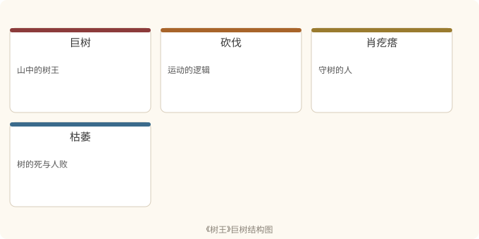

树王
一、基本信息
| 作者 | 阿城 |
|---|---|
| 成书/出版 | 发表年份待核（中国作家网 C030：阿城'三王'谱系——《棋王》1984年后同期作品；'树王'为'三王'之一） 泛文学及其当代接受问题——重勘阿城《棋王》（中国作家网）（官方文学机构） |
| 国别/地区 | 中国 |
| 时代 | 现当代 · 当代 |
| 体裁 | 中篇小说 |
| 语言 | 汉语（白话） |

《树王》巨树结构图（主题·结构图）
二、创作背景
中国作家网（C030）：阿城 major_works 载'树王、孩子王'（C030 作者页定位）。
题材（通说待核）：知青李立与'树王'肖疙瘩——砍树运动中的巨树之死。
三、内容脉络
砍树烧山与'树王'肖疙瘩的守树——巨树倒下后肖疙瘩的枯萎（通说待核）。
四、主要人物表
| 人物 | 身份 | 说明 |
|---|---|---|
| 肖疙瘩 | 山民 | '树王'（通说待核） |
| 李立 | 知青 | 砍树的逻辑（通说待核） |
五、主题与艺术特点
- 人与自然：巨树的神性（通说）。
- '文革'逻辑对山野的征服（通说待核）。
- '三王'之一的自然之维（C030 语境）。
六、影响与评论
- 中国作家网：阿城'三王'谱系（C030 作者页口径）。
泛文学及其当代接受问题——重勘阿城《棋王》（中国作家网）（官方文学机构） - 中国作家网：《棋王》为寻根文学代表作（C030——三王同域）。
泛文学及其当代接受问题——重勘阿城《棋王》（中国作家网）（官方文学机构）
七、阅读建议
难点
- 山林与'文革'话语的对撞。
- 阿城话本文体的静默。
- 《棋王·树王·孩子王》（人民文学出版社，通说待核）。
三王顺序可任选，建议棋王→树王→孩子王。
八、待核实
- 首刊年份（《上海文学》同期说）核对。
- 肖疙瘩/李立人名核对。
- '树王'称号来历待核。
本页主要来源
阿城的其他收录作品：棋王